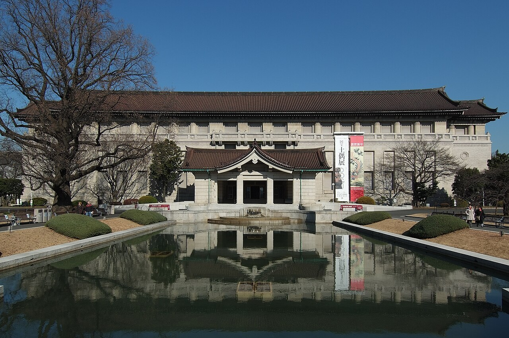
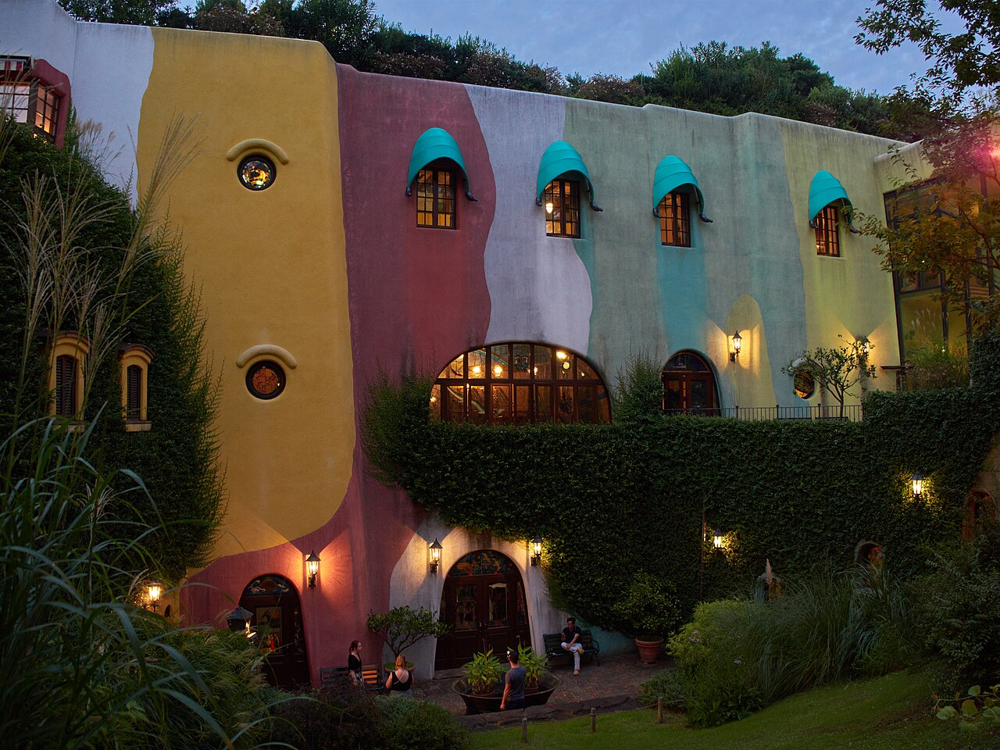

Tokyo Museums for Robert
10 days in Tokyo around the Ave Mujica shows — late May 2027



- For
- Robert: 10 days in Tokyo built around the Ave Mujica shows (May 29–30, K-Arena Yokohama). These are the museums from our lesson, plus a few more worth the trip.
- When
- Most museums in Tokyo close on Mondays. The Monday right after the shows (May 31) is a closed day almost everywhere — keep it for shopping or a day trip instead.
- Tickets
- Two on this list are reservation-only and sell out: the Ghibli Museum and the Fujiko F. Fujio Museum. Tickets go on sale about a month ahead — set a reminder. Everywhere else, you can just walk in.
- Note
- Hours below were checked in November 2026. Please double-check the official site before you go.
THE MAP
Numbers match the list below. Tap a pin for directions, or a number on a photo to find it here.
THE STORY OF TOKYO


MANGA & ANIME PILGRIMAGE


SCIENCE, TRAINS & ONE OF A KIND
Hours checked November 2026 — see official sites for the latest.
Official sites: Edo-Tokyo Museum · Tokyo National Museum · Sumida Hokusai Museum · Edo-Tokyo Open Air Architectural Museum · Ghibli Museum, Mitaka · Tokiwa-so Manga Museum · Suginami Animation Museum · Fujiko F. Fujio Museum · Meguro Parasitological Museum · National Museum of Nature and Science · The Railway Museum
Photos from Wikimedia Commons. Edo-Tokyo Museum: Wiiii (CC BY-SA 3.0); Tokyo National Museum: Wiiii (CC BY-SA 3.0); Ghibli Museum, Mitaka: lumoplank (CC0); Sumida Hokusai Museum: Kakidai (CC BY-SA 4.0); Meguro Parasitological Museum: istolethetv (CC BY 2.0); Tokiwa-so Manga Museum: Tokyo-Good (CC BY-SA 4.0); Suginami Animation Museum: TokyoMontana (CC BY-SA 3.0); Fujiko F. Fujio Museum: Aimaimyi (CC BY-SA 3.0); National Museum of Nature and Science: Souka Kinmei (CC BY 4.0); The Railway Museum: MaedaAkihiko (CC BY-SA 4.0); Edo-Tokyo Open Air Architectural Museum: lumoplank (CC0).


.jpg){kind=link}


.jpg){kind=link}